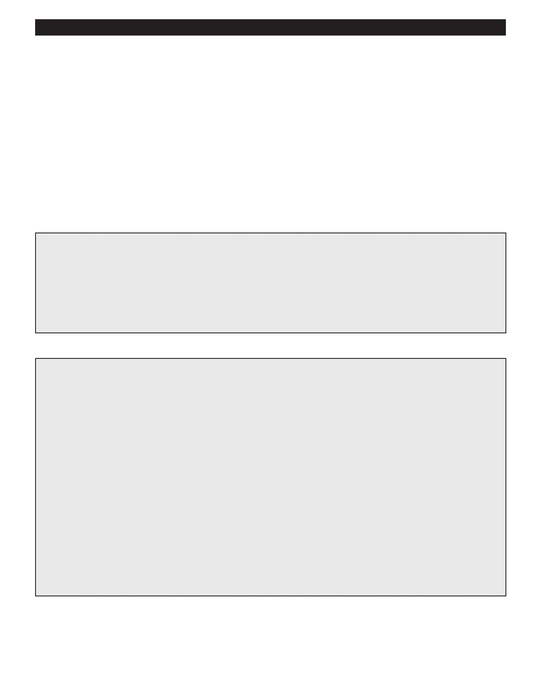

PA RT I C I PA N T R E S O U R C E G U I D E
Keeping a Garbage Disposal in Good Working Order
Sometimes, residents need help understanding how to best keep their garbage disposal
in tip-top shape. Consider sharing these tips with them.
The only things that should go into a garbage disposal are the things that remain after residents have scraped their plates
into the garbage can.
A good rule-of-thumb to follow is: “When it doubt, throw it out.” Or, if you won’t eat it, neither will your garbage disposal.
Run cold water for about 30 seconds after turning the disposal on.
Have residents consider running ice cubes in the unit as a means of “cleaning” it. The hard ice chips help knock down the
scum layers that build up below the seal and in the grinder wheel.
What Goes Down Garbage Disposals
Small amounts of leftover food from your plate
Small potato pieces and peelings
Carrot peelings
Coffee grounds (though some folks say these are not OK)
What Does Not Go Down Garbage Disposals
Anything that isn’t biodegradable food
Anything combustible
Plastic and metal
Cigarettes and cigarette butts
Bones from any animal
Hamburger
Bacon grease or other grease
Eggshells
Potato skins or large amounts of potato
Corncobs or husks, lettuce, asparagus and other fibrous fruits and vegetables
Shrimp and seafood shells
Pasta and rice
40